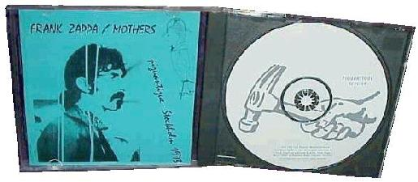

Заппа'zУх!Ой!
русский более или менее регулярный бюллетень для поклонников американского композитора
Frank'а Vincent'а Zappa'ы
Выпуск.3 (30 апреля 1998)
Пролетарию - булыжник, композитору - молоток.
Столица манит российского заппамана, представляясь из худосочного провинциального далека городом сплошных музыкальных лавок с Центральным парком горбухи и отдыха посередине.
Там ищущий всегда обрящет, найдет что-нибудь достойное собранных трудами праведными в разноцветную пачку видов Родины. Голубая Биржа, розовый Большой театр.
В апреле, например, за скромную подборку зубов Братской ГЭС в немытом предбаннике ДК им.Горбунова, в закутке у касс, давали ксерокопии старого доброго немецкого сборника песен FZ Plastic People. Corrected Copy. В хозяйстве вещь безусловно необходимая.
В Доме Книге на бывшем Калининском проспекте, в отделе пиленного винила в пачке с этикетокой Zappa, обнаружилась (денег было мало, а воровать неудобно, так что, возможно до сих пор пылится за спинами слегка заветрившихся продавщиц) сущая редкость. Нераспечатанный... Нет, вот так... НЕРАСПЕЧАТАННЫЙ You Can't Do That On Stage Anymore. Sampler. Двойной, малотиражный, никогда в CD формате не переиздававшийся демо-альбом, и всего-то за пару башен Соловецкого монастыря. Чудеса!
Ну, а Трансильвания на Тверской весь год спокойно и деловито торгует официальными бутлегами. Просят 95 новых за одинарный альбом. Это, переводя цельсии в фаренгейты, что-то около пятнадцати с половиной Джорджей Вашингтонов за штуку. Помнится во времена, когда Ельцин мерседесу предпочитал Т-72 в Библио-Глобусе (по-другому он назывался тогда, конечно) предлагали то же самое "левое моно" за полновесный американский двадцатник. Искренне я их за это ненавидел.
Кстати, тогда это были лицензионные английские от Essential Records/Castle, а нынешние - настоящие, от оригинального производителя/составителя Rhino Records. То есть, теперь вместо скучных Касловских однообразных надписей на пошлом алюминии - цветные диски (и все разные) с веселым, наповал разящим молотком.

Но стоит ли это смазывание орудием обходчика художественной карты буржуазного будня, этот ни на йоту не улучшенный, не почищенный, просто напрямую перегнанный с пиратского винила в цифру самогон, наших трудовых деноминированных рублей? Десяток наиболее известных (именно известных, а вовсе даже не качественных) бутлегов, изданых в 91-92 годах композитором из чистой желудочной вредности:-))).
Традиционный ответ западного коллекционера, если вы собрали все официальные издания, то да.
Условие для нашего, заброшенного в Азию брата почти невыполнимое, а значит "положит он на него" непременно. Иными словами, небольшой комментарий и краткая аннотация более чем уместны.
Итак, из выпущенных в начале девяностых двумя залпами серий Beats The Boots I и Beats The Boots II, до сих пор циркулирует, попадается там и сям, только Beats The Boots I. Оговоримся, на компактах. На кассетах, пожалуйста, имеется в наличии и первый, и второй выпуск. Пожалеем об этой потере, поскольку в ящичке картонном (а второй выпуск, в отличии от первого, продавался только и исключительно комплектом) Beats The Boots II, помимо собственно компактов, были - маломерный берет (сразу ребенку), значок (тут же на лацкан) и Scrapbook (читать, читать и еще раз вдумчиво). Пожалеем и сосредоточимся на том, чем полным-полна московская коробочка.
Абсолютный перл (не язык написания cgi скриптов, а жемчужина) - бесспорно Piquantique. Это странная смесь Шведско/Австралийских записей выступлений 73 года блестящей, так называемой, ROXY банды (Duke, Ponty, the Underwoods and the Fowlers). Качество звучания посредственное.
Еще гаже другой исторически ценный сувенир эпохи ROXY - Unmitigated Audacity, представьте себе, говорил один мой американский знакомый, запись, сделанную на переносной магнитофончик с головками, покрытыми коростой магнитной пыли, слушателем из сорокового ряда, умудрившимся для этого эпохального события купить кассету со скидкой в овощной лавке за углом. И тем не менее, весь этот ужас, ничто иное, как запись одного из юбилейных, посвященных десятилетию группы Матери Изобретения концертов, песни периода Freak Out! лобают музыканты набора Overnite Sensation.
Freaks & Motherf*#@%! - запись концерта группы с Flo'n'Eddie. Стоит своих денег, хотя бы потому, что содержит Holiday In Berlin со словами.
Look at all the Germans.
La la la la la la
Watch them follow orders.
La la la la la la
See them think they're doing
something groovy in the street.
Качество звука среднее.
The Ark и 'Tis The Season To Be Jelly - это, соответственно, Boston, 1968 и Швеция, 1967. Мне, как любителю записей изначальных матерей нравятся чрезвычайно. Два разных, но что приятно очень, очень длинных King Kong'а. Качество приличное. The Ark - попросту сворованный мастер.
Вполне терпимо звучит и As An Am, солянка записей 1981/1982 - для тех, кому по душе бесконечные гитарные соло Фрэнка.
Anyway the Wind Blows (Париж, 1979)и SaarbrЭcken 1979 (на самом деле 1978:-)) - я бы отнес к необязательным. Хотя, если вам милы песенки альбомов You Are What You Is и Sheik Yerbouti, можете насладиться концертными вариантами. Качество приемлемое.
Ну, вот такие у нас сегодня американские молотки и русские гвозди. Денежка счет любит. Свой глаз - смотрок, а кто сердцем не стареет, тому и белка, и свисток.
Искренне Ваш, Владимир Советов
http://www.arf.ru/
| Домой | Заппа'zУх!Ой! | Поиск | Хозяин |